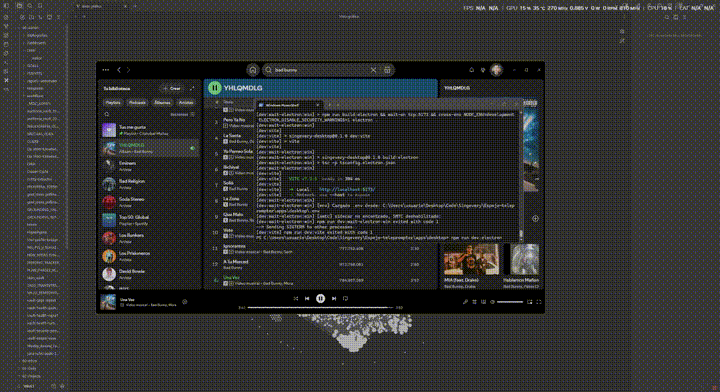

Canta cualquier canción,
aunque no leas el idioma
Singevery escucha lo que suena en tu PC, reconoce la canción y muestra la letra sincronizada sobre el escritorio — con furigana, romaji y traducción al lado. No importa si viene de Spotify, YouTube o cualquier otra cosa.
Windows 10/11 · El reconocimiento funciona sin registrarse ni poner ninguna clave.

Qué hace
Un teleprompter transparente que se queda encima de lo que estés haciendo, sin taparte la pantalla.
Reconoce lo que suena
Identifica la canción desde el audio del sistema o el micrófono. No necesita saber qué reproductor usas.
Letra sincronizada
Resaltado tipo karaoke que avanza con la música, y se corrige solo si se va desfasando.
Overlay transparente
Flota sobre el escritorio y deja pasar los clics mientras cantas. Se arrastra y se personaliza.
Ayudas de lectura
Furigana, romaji, pinyin o romanización según el idioma — sin destruir la letra original.
Traducción lado a lado
Letra y traducción en columnas, iluminándose a la par. Para entender lo que cantas.
Entiende lo que cantas
La letra a la izquierda, su significado a la derecha, avanzando juntas. Sirve para ir asociando palabras sin dejar de cantar.
Idiomas que no se leen fácil
La app detecta el sistema de escritura y genera la lectura encima del texto, igual que el furigana japonés.
| Idioma | Qué muestra |
|---|---|
| Japonés | Furigana sobre los kanji, romaji, o todo en hiragana |
| Coreano | Romanización revisada, palabra por palabra |
| Chino | Pinyin por carácter, con o sin tonos |
| Cirílico | Romanización latina sobre cada palabra |
| Otros | Transliteración latina cuando se puede |
Cómo se usa
Tres pasos, sin configurar nada.
Pon música
Spotify, YouTube, un video, lo que sea que suene en el PC.
Aprieta SING
Clic en la pastilla flotante o el atajo Ctrl + Alt + S.
Canta
La letra aparece sincronizada. Elige el modo de lectura y ajusta el tamaño o el color a tu gusto.
Lo que conviene saber antes
Sin letra chica: esto es lo que te vas a encontrar.
El instalador no está firmado con un certificado de código, así que SmartScreen dirá "Windows protegió tu PC". Pulsa Más información → Ejecutar de todos modos. El código es abierto y puedes revisarlo.
Nada. Reconocer canciones, mostrar la letra y traducirla funcionan recién instalada la app. La traducción gratuita tiene un tope diario de unas 3 canciones (30 si pones tu email); con una clave de DeepL o Google se quita el tope y mejora la calidad.
La sincronización fina se apoya en el reproductor del sistema de Windows 10/11. Todavía no hay versión de macOS, Linux ni móvil.
Funciona encima de juegos en pantalla completa sin bordes, y se mueve con Ctrl+Alt+flechas aunque el juego tenga el mouse. En pantalla completa exclusiva Windows no deja dibujar nada encima: ahí hay que cambiar el juego a sin bordes.
Singevery no aloja letras: las busca en servicios públicos y las guarda en tu equipo para no repetir la consulta. Los derechos son de sus autores.
Pruébalo con la canción que tengas sonando
Gratis, de código abierto, sin cuenta ni registro.